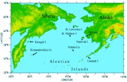
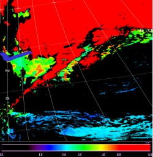

 This study uses remote sensing to quantify and locate spring phytoplankton bloom and compare its location to marginal sea-ice zone (MIZ). The study area is the Bering sea, which is a dynamic, productive globally important ecosystem. AVHRR and SeaWiFS data were used in this study. Digital image processing was carried out using SEADAS and ENVI, two commercially available software packages.
 The well published Ocean Color 4 band (OC-4) algorithm was applied to all the Sea WiFS images to generate images showing the concentration and distribution of chlorophyll a. AVHRR images were used to locate the extent of the sea ice edge and map the extent of the sea ice. The SeaWiFS images were georeferenced with the AVHRR images so that they could be geographically overlayed and compared. The image on the left shows a SeaWiFS OC-4, Level 2 processed image of the study area, acquired on May 16, 2001. The blue line denotes sea ice extent as determined by SEADAS sea ice mask function. The color bar denotes color values for OC-4 derived chlorophyll a values in mg per cubic meter, which are equal to o.o1 on the lower end of the color bar (black) and 64.00 on the uper end of the color bar (deep red).